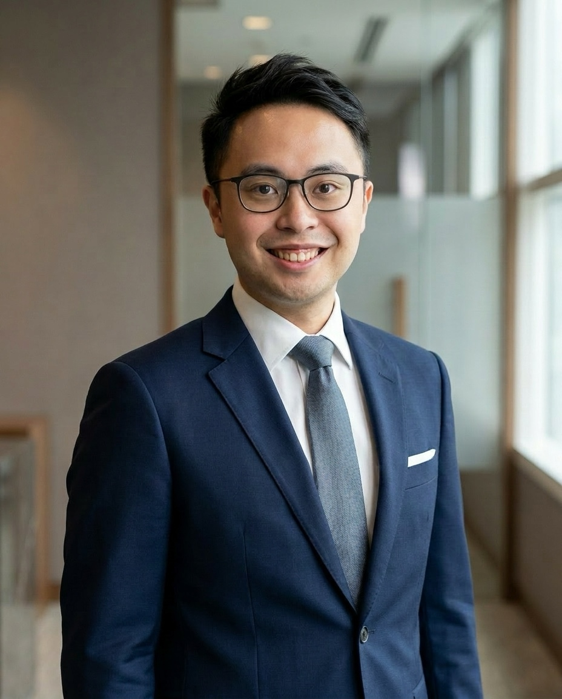

Toby has over nine years of legal and regulatory experience in banking and finance. He is admitted as a solicitor in Hong Kong and holds the PRC Legal Professional Qualification. He has a deep understanding of financial products and regulations, having advised financial institutions on OTC derivatives and repo documentation, structured products, margin rules, EMIR and Dodd-Frank, IBOR transition, and SFC regulatory requirements. He helps local, Mainland and international firms build compliant, scalable businesses in Hong Kong.
Toby joined VAM Advisory as Senior Legal & Compliance Adviser in 2026. Before that, he served as in-house counsel at J.P. Morgan and Huatai Securities. Before moving in-house, he practised at an international law firm, having trained at one of the largest independent Hong Kong law firms. His work at Huatai was recognised with the China Business Law Journal In-house Counsel Award for Securitisation, and his team was named Innovative In-House Team of the Year by Asian Legal Business.
Toby serves as a Chairman of the Appeal Tribunal (Buildings Ordinance) and sits on the In-house Lawyers Committee, the Working Party for In-House Lawyers, the Community Relations Committee, the Islamic Affairs Working Party and the Hong Kong Lawyer Editorial Board of the Law Society of Hong Kong. He is also Legal Advisor to the Board of The New Normal Charity, and was formerly an Adviser on the Panel of Film Censorship Advisers. He often speaks at industry conferences and writes on legal and regulatory topics.
Toby holds an MSc in Law and Finance and an LLB from Queen Mary, University of London, and an LLB from China University of Political Science and Law. He speaks Cantonese, English and Mandarin at native level.
Speak to our team
A practical conversation about your next move.
Whether you need in-house legal documentation, compliance advice for a financial-services, digital-assets or exchange business, product suitability, AML/KYC client onboarding, transaction monitoring or remediation support, VAM brings senior judgment and hands-on implementation.
Speak with VAM